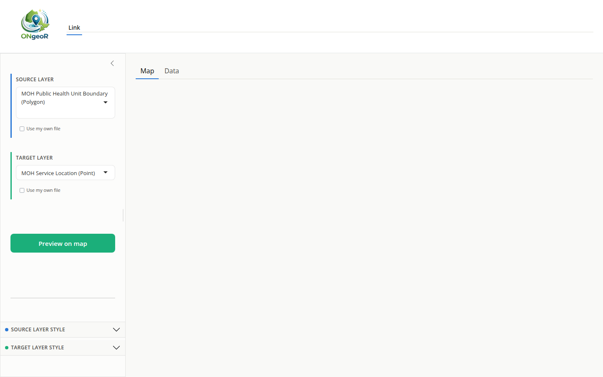
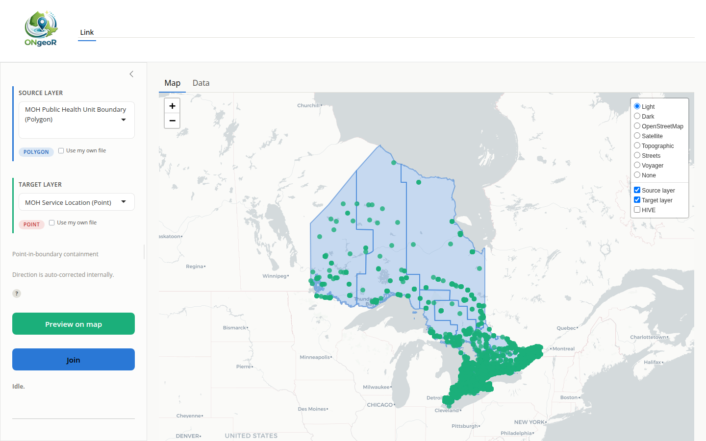
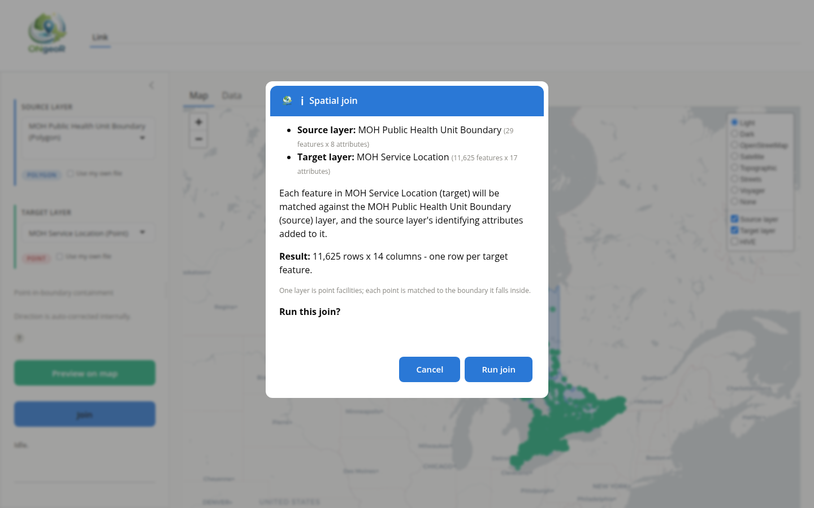
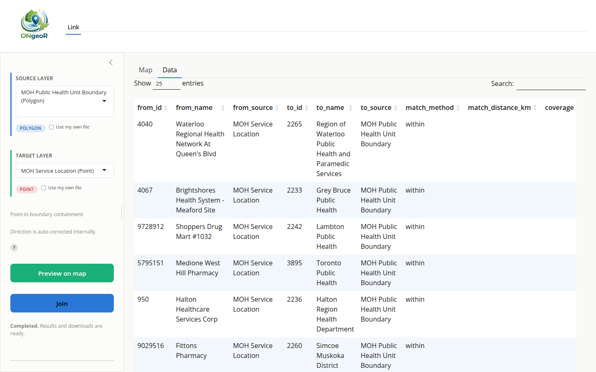

ONgeoR ships a browser-based Shiny application that lets you build spatial crosswalks and run nearest-match searches without writing any R code. This vignette describes how to launch the app and use its two main tabs.
Launching the app
Open a browser-based session with a single call:
ONgeoR::run_app()run_app() calls shiny::runApp() on the
bundled app directory (inst/shiny). By default Shiny opens
a browser tab automatically. You can pass additional arguments to
control the port or host:
ONgeoR::run_app(port = 4321, launch.browser = FALSE)The app requires the shiny and bslib
packages; run_app() checks for them at startup and prompts
you to install them if they are missing.
The Link tab

The Link tab at startup. Source and Target layer pickers are set to their defaults; the Join button is greyed out until a preview succeeds.
The app has a single working tab. It retrieves two registered Ontario GeoHub or LIO layers and joins them spatially.
There is no match-rule control. Once you have picked a Source layer
and a Target layer, the operation is fully determined by their geometry
types, so there is nothing left to choose. Two polygon layers produce an
intersection; two point layers produce a nearest match; a point and a
polygon produce containment; anything involving a raster produces
sampling. The ? link beside the layer pickers shows the
full nine-cell matrix.
Workflow:
- Source layer – Select a source from the “Source layer” dropdown. This is the layer whose identifying attributes get attached to the result (e.g. Public Health Unit boundaries).
- Target layer – Select a second source from the “Target layer” dropdown (e.g. MOH Service Locations). The result is shaped like this layer: one row per target feature.
- Preview on map – Click Preview on map to retrieve both layers and draw them on an interactive Leaflet map. Inspect the map to confirm the layers align as expected before joining. Join stays greyed out until a preview succeeds for the currently selected pair, and re-greys if you change either dropdown.

After a successful preview: both layers are drawn on the map and the Join button is enabled (blue).
- Join – Click Join to open a confirmation that names both layers with their dimensions and states the expected result shape. Nothing is retrieved or computed until you confirm.

The Join confirmation modal: layer names, feature counts, column counts, expected result shape, and the ‘Run join’ button.
Two point layers are joined the same way, on this same tab: each
target point is matched to its single nearest source point, and the map
draws connector lines between the pairs. There is no k and
no distance cap, because a nearest match is what the geometry pair
already implies.
The direction is fixed: the result is shaped like the Target layer, one row per target feature.
Two result tables

The Data sub-tab after a successful join: one row per target feature, with source attributes prefixed src_ and target attributes prefixed tgt_.
A polygon-to-polygon join produces two views of one computation, and both are downloadable:
- The pair table (
pairs.csv) has one row per overlapping pair, each with aninteraction_id, and is the one you join other data onto. - The target table (
mapping.csv) has exactly one row per target feature, with the matched sources collapsed into;-delimited columns. It is easier to read but cannot be joined on.
Both carry every attribute from both input layers, prefixed
src_ and tgt_ so that a NAME
column on one layer cannot overwrite a NAME column on the
other.
Download buttons
The download buttons become available as the underlying result appears.
| Button | Output |
|---|---|
| Download map |
map.html – the Leaflet map as a standalone HTML
file |
| Download results |
mapping.csv – one row per target feature (or
linked.csv for raster linking) |
| Download pairs |
pairs.csv – one row per matched pair |
| Download script |
reproduce.R – an R script that reproduces the result
from scratch |
The map.html file embeds the widget’s JavaScript and
data, so it opens without R installed; note the basemap tiles are still
fetched from the tile provider, so viewing it requires network
access.
A note on automated testing
The source picker dropdowns use selectize.js, a JavaScript-enhanced
widget that wraps a standard HTML select element. When writing automated
tests with shinytest2, the underlying input value can be
set programmatically:
# Works: sets the underlying Shiny input value
app$set_inputs(base_layer = "phu_boundaries")However, the visible selectize dropdown does not update its displayed
text until the JavaScript layer processes the change. Tests that rely on
the widget visually showing the selected value must follow the
set_inputs() call with either app$click() on a
trigger element or direct JavaScript injection via
app$execute_script().
Because of this constraint, the ONgeoR test suite covers the server-side logic (retrieval, linking, nearest-match computation, and download generation) in isolation rather than driving the full UI flow through a headless browser. This is intentional: the spatial and data correctness properties are best tested at the function level, while UI integration tests would add fragility without exercising new logic paths.
If you want to add UI-level coverage,
shinytest2::AppDriver is the recommended approach. See
vignette("shinytest2", package = "shinytest2") for details
on recording and replaying interactions with selectize widgets.